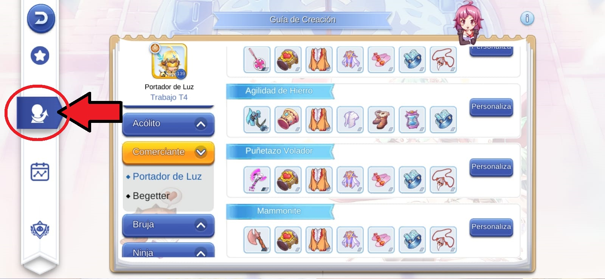
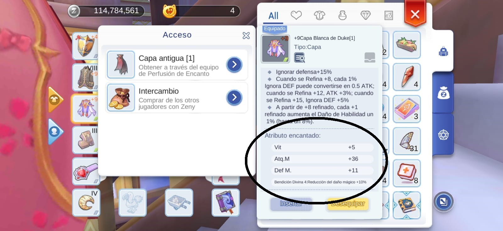
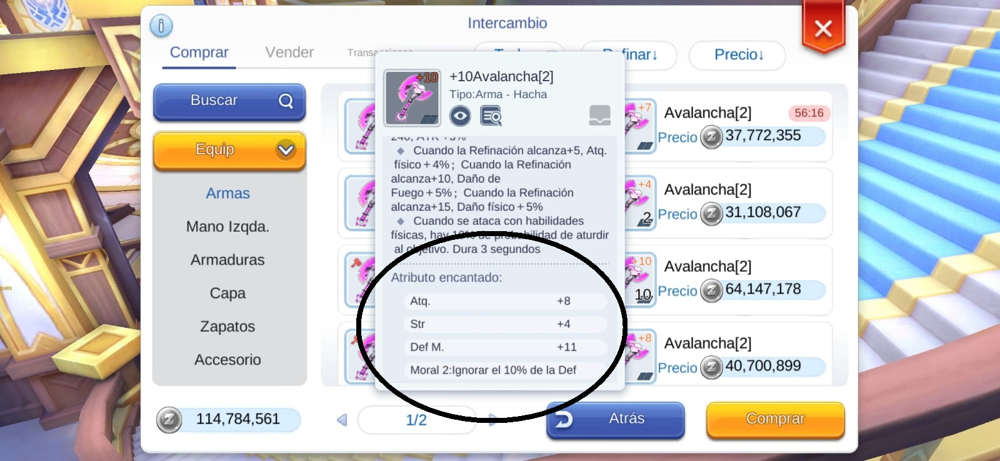

Vision General
Como vamos a empezar desde el nivel 1 e ir progresando paulatinamente, iremos por orden, empezando por su Armado de Comerciante, explicación del armado y sus estadisticas base, hasta ser Portador de Luz, donde empezaremos a enfocarnos en el PvP (Player versus Player: Jugador contra Jugador)
Lo primero que debemos entender es que se necesita zeny para poder armar nuestro Maestro Mecánico, entonces nos enfocaremos en hacer zeny con un Armado de Mecánico modo Farm, lo cual es muy aconsejable empezar, ya que ésta clase tiene habilidades exclusivas que le permite ganar botines de zeny y materiales mayores que las del resto de las clases y nos aprovecharemos de ellas. Empezemos
Estadisticas
- DEX: 20 - 30
- STR: 99
- Resto INT/VIT
Primero invierta minimo 20 puntos en DEX para no fallar las habilidades, no sirve de nada pegar mucho si no encestas los ataques
Luego bombear STR hasta poder matar al grupo de monstruos objetivo
Finalmente invierta el resto en INT para aumentar su SP (Spiritual Power: Poder Espiritual = Mana) y la regeneracion de SP ya que usará mucho sus habilidades
Como es Mecánico modo Farm, no necesitará mucha supervivencia, por lo tanto no invierta en VIT a menos que le esté costando sobrevivir
Tenga en consideración que la clase Mecánico puede funcionar perfectamente tanto en solitario como en equipo siendo modo Farm, gracias a sus habilidades de apoyo y de aumento de daño
Habilidades
Comerciante
- Juntar Bienes 10
- Ataque de Carreta 10
- Carreta Mejorada 10
- Grito de Batalla 10
Herrero
- Piedras Encantadas 1
- Martillazo 5
- Enfurecer 5
- Investigacion Armamentisca 10
- Arma Perfecta 10
- Comprar Barato 5
- Vender Caro 5
Hojalatero
- Codicia 10
- Aceleración de Carreta 1
- Maestro de Negocios 5
- Reparación de Arma 1
- Maestro de fabricar 10
- Vender Caro 5 (10 en total)
- Arte de regatear 5
- Fabricación de Aleación de Élite 1
- Fabricación de Armas 1
Antes de empezar a invertir puntos en Mecánico, el sistema le pedirá que siga subiendo habilidades:
Complete las siguientes
- Juntar Bienes 5 (15 total)
- Grito de Batalla 10 (20 total)
- Búsqueda Orideocon 10
- Experto en Refinación 5
Mecánico
- Licencia de Madogear 10
- Puño Cohete 10
- Cañon de Brazo 10
- Dominio del Hacha 10
- Armadura Anti-Gravedad 3
- Deslizamiento Lateral 1
- Experto en Refinación 5 (10 en total)
- Piel Calentada 10
- Luz de la Humanidad 1
El resto de sus puntos irá a Foco de la Fuerza por defecto, como al resto de las clases
Una vez llegado a este punto, puede resetear con Cuaderno Ymir

y probar otras habilidades y caracteristicas. Consulte nuestra guia:
El Armado de habilidades final de Mecanico Modo Farm deberia quedar de la siguiente manera con el reseteo de cuaderno Ymir
Equipo
Los Mecánicos son bastante sencillos de armar, aunque también tiene muchas otras opciones, las piezas mas escenciales dependerán del futuro que le quieras armar a tu Maestro Mecánico
Lo más aconsejable es comprar el Equipo en Intercambio con un buen Encanto grado 2 a 4. Consulte nuestra Guia de Mejoramiento de Equipos para mas detalle sobre este tema:
Puede hechar un vistaso a los distintos tipos de armados que el mismo juego le enseña dirigiendose al menu de Asistente:
Luego seleccionar la siguiente ventana:

Como puede notar, lo más cambiante es el Arma, ya que éstas otorgan buffos muy especifico a ciertas habilidades o potencian atk% directamente, dependiendo de su estilo de juego personal
El Armado común de Mecánico es el de Puñetazo volador y es el que combina con los armado de habilidades expuestas anteriormente:

Si bien puede armar el equipo desde cero comprandolos a los NPC de las distintas ciudad, recomiendo juntar zeny y comprar el Equipo con un poderoso Encanto
Mira esta bonita permafusion de Capa Antigua con 4°to Encanto:

O ésta hacha Avalancha que está en Venta con un Encanto de Moral 2:

Entiendo que pueda resultar muy caro la compra de estos artículos, por eso se recomienda la agricultrua zeny por encima de subir de nivel, de ahí este armado de Mecanico Modo Farm. También puede consultar nuestra Guia zeny:
Sigamos con el armado de Sombreros que puede usar por defecto
Cabeza:
Boina de Orejas de Gato [1]
Es muy facil de conseguir y es muy poderoso para los iniciados además de tener espacio para ponerle una Carta, las 3 B (Bueno, Bonito y Barato)
Cara:
Espíritu Ángelical

está bastante bien, muy parecido a la Boina de Orejas de Gato
Tornillo en la Cabeza:

por si no puede conseguir su Espíritu Ángelical
Boca:
Susurro del Abismo
Para un poco mas de Atk%
Cubrebocas con Espinas:

Puede ser su otra opción, facil de conseguir también
Espalda:
Alas Malignas

Apesar de ser excelente Equipo de espalda, puede resultar dificil de conseguir por su largisima mision en Glast heim Área
Cola:
Escultura de Cresta de Hielo
Siempre en Venta en el Intercambio y presenta ser bastante buena
No olvide usar su Carro:
Y su Madogear:
Recuerde buscar el Equipo en Intercambio con buen Encanto!. Revise el Intercambio constantemente
Runas Avanzadas
Enfoquese en las siguientes Runas Avanzadas para potenciar lo suficiente su Ataque de Cañon de Brazo y asi farmear como Dios manda


Monumento Aeisr
Busque primordialmente El buffo para Cañon de Brazo!!:
Luego enfoquese en Fuerza Imparable y Hacha Refinada Daño Aumentado:

Luego según sus contribuciones repartir en las siguientes:
Tambien puede invertir en HP si estas lo suficientemente bien para ayudar en los PvP:
Si eres como yo, Mecánico Full farm zeny y repartió caracteristicas en LUK...
Puedes también usar contribuciones en las runas que cambian los puntos de LUK y DEX en daño:
Usar puntos en LUK y DEX ayuda para obtener más posibilidades de exito al momento de refinar equipo al +8, +10 o +15 con sus habilidades exclusivas
Los Atributos en su Monumento Aeirs debe estár mas o menos así:
Con todo eso Su Cañon de Brazo debe estar lo suficientemente fuerte para matar Arpias de un solo Hit y farmear montones de millones de zeny:

Recuerde que para activar su Cañon de brazo debe usar el material Caracola:
No olvide que su Habilidad Piedras Encantadas le otorgará Combustible para Engranajes Magicos:
Venda esas piedras y combinado con su otra habilidad exclusiva Vender caro sumará otros millones más para usted:
Creo que está todo abarcado por ahora. Si tienes una duda, consulta, mejorar esta guia o si te gustó mi trabajo, puedes mandarme un mensaje o consultarme!
(=0u0=)/ contáctame +56 9 89096503